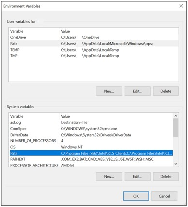
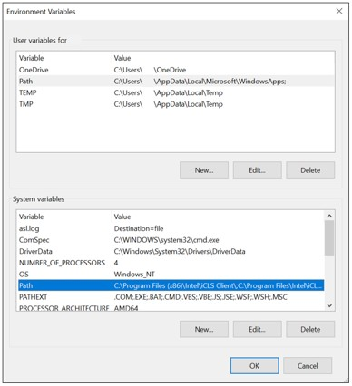

soubor (file) je množina souvisejÃcÃch dat uložených na diskové jednotce. Název souboru je obvykle tvořen jménem (ve Windows až 254 znaků) a pÅ™Ãponou, která naznačuje typ souboru. K dalÅ¡Ãm vlastnostem souboru patřà jeho velikost, autor (vlastnÃk), datum vytvořenÃ, datum změny, atributy, pÅ™Ãstupová práva apod.
Cesta (path) vyjadřuje umÃstěnà souboru vždy směrem od nejvyÅ¡Å¡Ãho adresáře: C:\XAMPP\mysql\bin\mysql.exe. Pro operace se soubory využÃváme někdy zástupné znaky (wildcards): ▫ symbol * nahrazuje v názvu libovolný počet znaků (např. *.*); ▫ symbol ? nahrazuje jeden libovolný znak (např. s?s.txt)
Programové soubory obsahujà instrukce, podle nichž procesor ve spolupráci s dalÅ¡Ãmi hardwarovými komponentami plnà konkrétnà úlohy. Mohou být uloženy v již zkompilované binárnà podobě (nejčastěji ve strojovém kódu pro danou platformu), nebo ve zdrojovém kódu, obsahujÃcÃm pÅ™Ãkazy určitého programovacÃho jazyka. Mezi programové soubory můžeme zařadit také skripty, soubory instrukcà v textové podobě, které ke svému spuÅ¡těnà vyžadujà speciálnà program - interpret.
VětÅ¡Ã programy jsou tvořeny programovými knihovnami (runtime libraries), speciálnÃmi soubory s připravenými funkcemi, které programy využÃvajà pro svůj běh. Ve Windows to jsou např. soubory DRV a SYS (obsahujÃcà zejména ovladače čili drivery, ale i systémové funkce), nebo také DLL (dynamic linking library - dynamicky linkované knihovny), které mohou být podle potřeby za běhu (dynamicky) připojeny k jednomu i vÃce programům.
Datové soubory obsahujà data různého charakteru (ÄÃselné, textové, grafické, zvukové údaje). K jejich zpracovánà se použÃvajà konkrétnà programy, a proto jsou často pÅ™Ãpony těchto datových souborů asociovány (propojeny) s určitou aplikacà (např. DOCX s programem MS Word, nebo XLSX s programem MS Excel).
 

© 2022 - Ondřej Lampa IT1